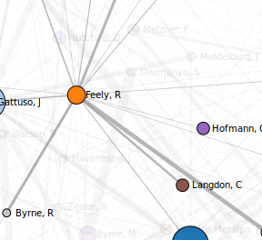
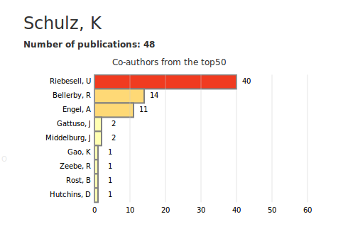
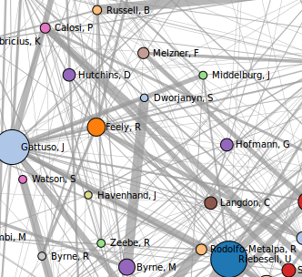

Click on a node to explore coauthors.

Once clicked on an author, a row chart that represents the different co-authors and their number of co-publications
is display on the right side.

Double click anywhere on the graph layout to retrieve all connections.